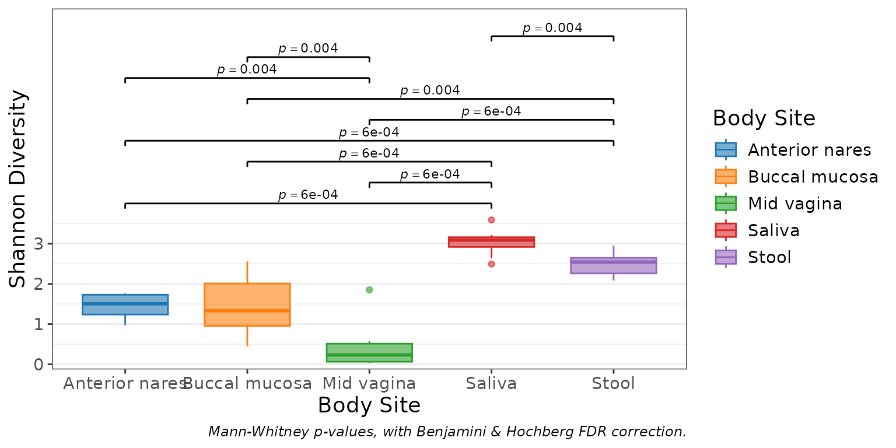
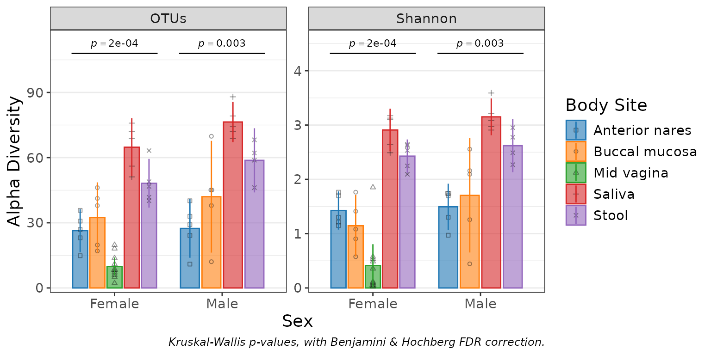
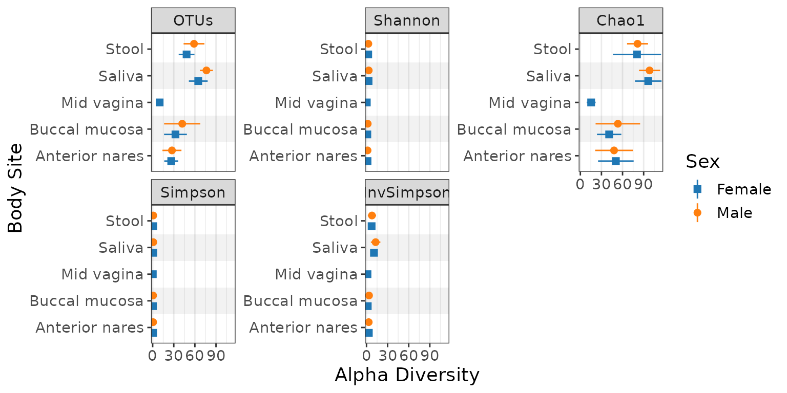

Visualize alpha diversity with boxplots.
Usage
adiv_boxplot(
biom,
x = NULL,
adiv = "Shannon",
layers = "x",
stat.by = x,
facet.by = NULL,
colors = TRUE,
shapes = TRUE,
patterns = FALSE,
flip = FALSE,
stripe = NULL,
ci = "ci",
level = 0.95,
p.adj = "fdr",
outliers = NULL,
xlab.angle = "auto",
p.label = 0.05,
transform = "none",
caption = TRUE,
...
)Arguments
- biom
An rbiom object, such as from
as_rbiom(). Any value accepted byas_rbiom()can also be given here.- x
A categorical metadata column name to use for the x-axis. Or
NULL, which groups all samples into a single category.- adiv
Alpha diversity metric(s) to use. Options are:
"OTUs","Shannon","Chao1","Simpson", and/or"InvSimpson". Setadiv=".all"to use all metrics. Multiple/abbreviated values allowed. Default:"Shannon"- layers
One or more of
c("bar", "box" ("x"), "violin", "dot", "strip", "crossbar", "errorbar", "linerange", "pointrange"). Single letter abbreviations are also accepted. For instance,c("box", "dot")is equivalent toc("x", "d")and"xd". Default:"x"- stat.by
Dataset field with the statistical groups. Must be categorical. Default:
NULL- facet.by
Dataset field(s) to use for faceting. Must be categorical. Default:
NULL- colors
How to color the groups. Options are:
TRUE-Automatically select colorblind-friendly colors.
FALSEorNULL-Don't use colors.
- a palette name -
Auto-select colors from this set. E.g.
"okabe"- character vector -
Custom colors to use. E.g.
c("red", "#00FF00")- named character vector -
Explicit mapping. E.g.
c(Male = "blue", Female = "red")
See "Aesthetics" section below for additional information. Default:
TRUE- shapes
Shapes for each group. Options are similar to
colors's:TRUE,FALSE,NULL, shape names (typically integers 0 - 17), or a named vector mapping groups to specific shape names. See "Aesthetics" section below for additional information. Default:TRUE- patterns
Patterns for each group. Options are similar to
colors's:TRUE,FALSE,NULL, pattern names ("brick","chevron","fish","grid", etc), or a named vector mapping groups to specific pattern names. See "Aesthetics" section below for additional information. Default:FALSE- flip
Transpose the axes, so that taxa are present as rows instead of columns. Default:
FALSE- stripe
Shade every other x position. Default: same as flip
- ci
How to calculate min/max of the crossbar, errorbar, linerange, and pointrange layers. Options are:
"ci"(confidence interval),"range","sd"(standard deviation),"se"(standard error), and"mad"(median absolute deviation). The center mark of crossbar and pointrange represents the mean, except for"mad"in which case it represents the median. Default:"ci"- level
The confidence level for calculating a confidence interval. Default:
0.95- p.adj
Method to use for multiple comparisons adjustment of p-values. Run
p.adjust.methodsfor a list of available options. Default:"fdr"- outliers
Show boxplot outliers?
TRUEto always show.FALSEto always hide.NULLto only hide them when overlaying a dot or strip chart. Default:NULL- xlab.angle
Angle of the labels at the bottom of the plot. Options are
"auto",'0','30', and'90'. Default:"auto".- p.label
Minimum adjusted p-value to display on the plot with a bracket.
p.label = 0.05-Show p-values that are <= 0.05.
p.label = 0-Don't show any p-values on the plot.
p.label = 1-Show all p-values on the plot.
If a numeric vector with more than one value is provided, they will be used as breaks for asterisk notation. Default:
0.05- transform
Transformation to apply. Options are:
c("none", "rank", "log", "log1p", "sqrt", "percent")."rank"is useful for correcting for non-normally distributions before applying regression statistics. Default:"none"- caption
Add methodology caption beneath the plot. Default:
TRUE- ...
Additional parameters to pass along to ggplot2 functions. Prefix a parameter name with a layer name to pass it to only that layer. For instance,
d.size = 2ensures only the points on the dot layer have their size set to2.
Value
A ggplot2 plot. The computed data points, ggplot2 command,
stats table, and stats table commands are available as $data,
$code, $stats, and $stats$code, respectively.
Aesthetics
All built-in color palettes are colorblind-friendly. The available
categorical palette names are: "okabe", "carto", "r4",
"polychrome", "tol", "bright", "light",
"muted", "vibrant", "tableau", "classic",
"alphabet", "tableau20", "kelly", and "fishy".
Patterns are added using the fillpattern R package. Options are "brick",
"chevron", "fish", "grid", "herringbone", "hexagon", "octagon",
"rain", "saw", "shingle", "rshingle", "stripe", and "wave",
optionally abbreviated and/or suffixed with modifiers. For example,
"hex10_sm" for the hexagon pattern rotated 10 degrees and shrunk by 2x.
See fillpattern::fill_pattern() for complete documentation of options.
Shapes can be given as per base R - numbers 0 through 17 for various shapes, or the decimal value of an ascii character, e.g. a-z = 65:90; A-Z = 97:122 to use letters instead of shapes on the plot. Character strings may used as well.
See also
Other alpha_diversity:
adiv_corrplot(),
adiv_stats(),
adiv_table()
Other visualization:
adiv_corrplot(),
bdiv_boxplot(),
bdiv_corrplot(),
bdiv_heatmap(),
bdiv_ord_plot(),
plot_heatmap(),
rare_corrplot(),
rare_multiplot(),
rare_stacked(),
stats_boxplot(),
stats_corrplot(),
taxa_boxplot(),
taxa_corrplot(),
taxa_heatmap(),
taxa_stacked()
Examples
library(rbiom)
biom <- rarefy(hmp50)
adiv_boxplot(biom, x="Body Site", stat.by="Body Site")

adiv_boxplot(biom, x="Sex", stat.by="Body Site", adiv=c("otu", "shan"), layers = "bld")

adiv_boxplot(biom, x="body", stat.by="sex", adiv=".all", flip=TRUE, layers="p")

# Each plot object includes additional information.
fig <- adiv_boxplot(biom, x="Body Site")
## Computed Data Points -------------------
fig$data
#> # A tibble: 49 × 5
#> .sample .depth .adiv .diversity `Body Site`
#> * <chr> <dbl> <fct> <dbl> <fct>
#> 1 HMP01 1183 Shannon 1.76 Buccal mucosa
#> 2 HMP02 1183 Shannon 2.56 Buccal mucosa
#> 3 HMP03 1183 Shannon 2.97 Saliva
#> 4 HMP04 1183 Shannon 3.22 Saliva
#> 5 HMP05 1183 Shannon 1.40 Buccal mucosa
#> 6 HMP06 1183 Shannon 3.08 Saliva
#> 7 HMP07 1183 Shannon 1.26 Buccal mucosa
#> 8 HMP08 1183 Shannon 2.49 Saliva
#> 9 HMP09 1183 Shannon 3.59 Saliva
#> 10 HMP10 1183 Shannon 1.76 Anterior nares
#> # ℹ 39 more rows
## Statistics Table -----------------------
fig$stats
#> # Model: wilcox.test(.diversity ~ `Body Site`)
#> # A tibble: 10 × 9
#> `Body Site` .mean.diff .h1 .p.val .adj.p .lower .upper .n .stat
#> <fct> <dbl> <fct> <dbl> <dbl> <dbl> <dbl> <int> <dbl>
#> 1 Anterior nares - … -1.48 != 0 1.83e-4 5.59e-4 -1.89 -1.31 20 0
#> 2 Mid vagina - Sali… -2.71 != 0 1.83e-4 5.59e-4 -3.05 -2.42 20 0
#> 3 Buccal mucosa - S… -1.68 != 0 2.46e-4 5.59e-4 -2.19 -0.998 20 1
#> 4 Anterior nares - … -1.03 != 0 2.80e-4 5.59e-4 -1.34 -0.784 19 0
#> 5 Mid vagina - Stool -2.20 != 0 2.80e-4 5.59e-4 -2.51 -1.91 19 0
#> 6 Buccal mucosa - S… -1.17 != 0 2.20e-3 3.67e-3 -1.69 -0.451 19 7
#> 7 Anterior nares - … 1.18 != 0 2.83e-3 4.04e-3 0.789 1.59 20 90
#> 8 Buccal mucosa - M… 1.02 != 0 3.61e-3 4.17e-3 0.411 1.70 20 89
#> 9 Saliva - Stool 0.524 != 0 3.75e-3 4.17e-3 0.234 0.843 19 81
#> 10 Anterior nares - … 0.0464 != 0 9.10e-1 9.10e-1 -0.473 0.659 20 52
## ggplot2 Command ------------------------
fig$code
#> ggplot(data, aes(x = `Body Site`, y = .diversity)) +
#> geom_rect(
#> mapping = aes(xmin = -Inf, xmax = Inf, ymin = 4, ymax = Inf),
#> color = NA,
#> fill = "white" ) +
#> geom_boxplot(
#> mapping = aes(color = `Body Site`, fill = `Body Site`),
#> alpha = 0.6,
#> width = 0.7 ) +
#> geom_segment(
#> mapping = aes(x = .x, xend = .xend, y = .y, yend = .yend),
#> data = ~attr(., "stat_brackets") ) +
#> geom_text(
#> mapping = aes(x = .x, y = .y, label = .label),
#> data = ~attr(., "stat_labels"),
#> parse = TRUE,
#> size = 3,
#> vjust = 0 ) +
#> labs(
#> caption = "Mann-Whitney p-values, with Benjamini & Hochberg FDR correction.",
#> y = "Shannon Diversity" ) +
#> scale_color_manual(values = c("#1F77B4", "#FF7F0E", "#2CA02C", "#D62728", "#9467BD")) +
#> scale_fill_manual(values = c("#1F77B4", "#FF7F0E", "#2CA02C", "#D62728", "#9467BD")) +
#> scale_x_discrete() +
#> scale_y_continuous(
#> breaks = c(0, 1, 2, 3),
#> minor_breaks = c(0.5, 1.5, 2.5, 3.5),
#> expand = c(0.02, 0, 0.08, 0) ) +
#> theme_bw() +
#> theme(
#> text = element_text(size = 14),
#> panel.grid.major.x = element_blank(),
#> plot.caption = element_text(face = "italic", size = 9) )